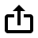
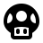
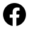
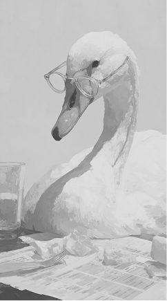
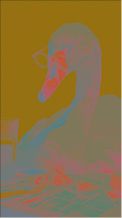
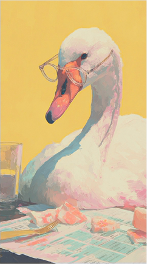
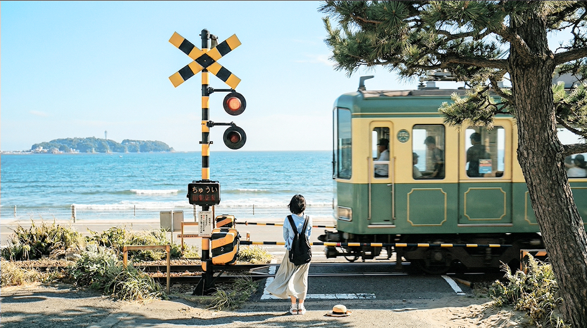
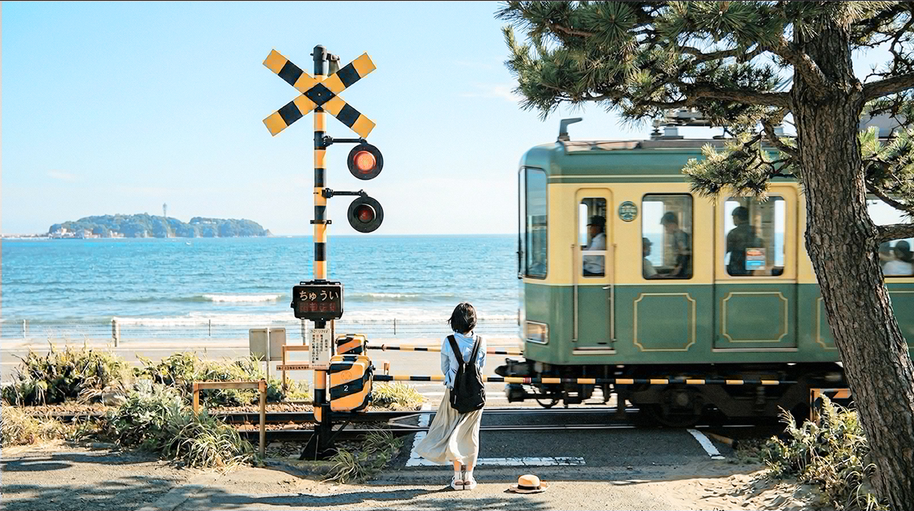

什麼是色度抽樣？圖解 4:4:4、4:2:2 與 4:2:0 的祕密
2026 / 03 / 22



你現在看的 Netflix 4K 畫面，其實有 75% 的色彩資訊早就被丟掉了——但眼睛幾乎感覺不到。這是影像工程一直在用的技術，原理來自人類視覺系統的特性。
買螢幕、相機或影音擷取卡時，規格表上可能會出現：「支援 4:4:4」、「輸出 4:2:2」或「影片編碼為 4:2:0」。這串數字代表什麼？對畫面有什麼影響？HDMI 頻寬不足時色彩為什麼會被降級？
這篇用圖解介紹「色度抽樣 (Chroma Subsampling)」——影像工程裡最常見的頻寬壓縮手法之一。
# 先從 RGB
說起：畫面的基本盤
#
人類眼睛的漏洞：對「明暗」比對「色彩」更敏感
#
圖解時間：4:4:4 vs 4:2:2 vs 4:2:0 到底是什麼？
#
頻寬節省有多驚人？一秒搞懂
#
總結表格：我們該如何選擇？
#
軟體內部的色彩魔術：看影片、玩遊戲與剪輯有什麼差別？
#
硬體與線材的妥協：最常見的畫質降級陷阱
#
延伸閱讀與參考資源
先從 RGB 說起：畫面的基本盤
我們都知道電腦、顯示卡、電視螢幕最常使用的是 RGB 色彩空間。畫面上每一個小小的像素 (Pixel)，都是由紅 (Red)、綠 (Green)、藍 (Blue) 這三個原色燈光組合而成的。
然而這會衍生出一個問題：若要完整記錄並傳輸 4K、60fps 影片中每個像素的 RGB 原始數據，將會產生極為龐大的檔案體積與頻寬需求。為了突破此一傳輸瓶頸，工程師們決定轉而從「人類視覺系統的感知特性」來尋求解決方案。
人類眼睛的漏洞：對「明暗」比對「色彩」更敏感
在影片工程中，我們不直接傳輸 RGB，而是把它轉換成另一種格式：YUV (或是 YCbCr)。 在這個格式中，影像訊號被拆分為兩個面向：
- Y (Luminance) 亮度： 決定了畫面的明暗、輪廓與細節。可以把這層想像成一張高解析度的黑白照片。
- U/V (Chrominance) 色度： 決定了畫面上的顏色分佈。

亮度 ( Y / Luma )
人類眼睛對亮度敏感

色度 ( UV / Chroma )

原始照片 ( Luma + Chroma )
這牽涉到一個極為關鍵的視覺感官秘密：人類眼睛對於深淺（光暗變化）的敏感度，遠遠大於對色彩的解析能力。
如果亮度（Luma）細節受損，畫面立刻會失去輪廓、看起來糊成一團；但如果只是把相鄰幾個像素的「顏色」稍微糊在一起（降低色度的解析度），只要亮度的輪廓還在，大腦就幾乎分辨不出破綻。
👁️ 親自試試看：你分得出差異嗎？
以 Lab 色彩空間模擬色度抽樣效果：保留完整的 L（亮度）通道，將 a、b（色度）通道模糊至約 1/6 解析度。拖動中間的分隔線來比較！


💡 左側為 Lab 模擬的色度模糊效果（ab
通道僅保留約 1/6 解析度），右側為原始完整色彩。
在自然照片中幾乎不可分辨。建議可以觀察平交道標示的黃黑叉叉，會發現左側的黃色邊緣有模糊的現象。
這就是色度抽樣的核心精神：利用大腦的視覺錯覺，保留 100% 絕對銳利的亮度資訊，但大膽地將色彩資訊丟棄掉一半以上。
既然視覺對色度造成的影響相對較小，工程師發明了「色度抽樣 (Chroma Subsampling)」。它是一種大幅縮減影像中色度訊息，來有效縮減檔案大小與節省頻寬的方法。在 YUV 格式中，如果我們削減色度資訊，最極端可以節省高達一半的資料量，且肉眼幾乎看不出畫質下降！
圖解時間：4:4:4 vs 4:2:2 vs 4:2:0 到底是什麼？
這三個數字代表了影像在一個 4 x 2 的像素區塊 (總共 8 個像素) 內的色彩取樣方式：
像素寬度
(通常固定為 4)
獨立色彩的數量
獨立色彩的數量
💡 將滑鼠移至上方三大數字，可查看對應的網格位置
注意：所有像素的亮度 (Y) 都會在所有的抽樣格式中被 100% 完整保留！因為人眼對光暗最敏感，所以被犧牲縮減的永遠只有「色彩 (色度)」。
4:4:4 格式 (無抽樣)
數字表示在 4 個像素的寬度中，上下兩排的 4 個像素全都有自己獨立的色彩。它沒有使用到色度抽樣，呈現了最完整的亮度與色度。
適合場景： 預算頂級的好萊塢電影、極端重度特效合成（VFX）、高階數位相機 RAW
檔，以及絕對不能有顏色誤差的電腦工作顯示器。它是不計儲存成本的最高畫質指標。
🖥️ 為什麼電腦桌面必須是 4:4:4 (Full RGB)？
與動態影片平滑的色彩過渡不同，電腦介面充滿了極為銳利的高對比邊緣，特別是文字。作業系統極度依賴每個像素精準的色彩資訊，來進行字體的邊緣平滑（次像素渲染技術）。
如果在連接螢幕或電視時，因為線材頻寬不足（例如 HDMI 規格太舊），導致顯示卡被迫將色彩降級輸出（變成 4:2:2 或
4:2:0），相鄰像素就會被迫「共用顏色」。這會讓字體邊緣瞬間崩壞，出現刺眼的彩色毛邊（Color Fringing）、模糊，甚至細小線條直接消失。因此，只要效能與頻寬允許，電腦絕對會死守 4:4:4
的無損輸出，這是維持閱讀體驗的最後底線！
💡 技術補充：4:4:4 不等於 RGB？
雖然 4:4:4 經常與 RGB 混為一談，但在數學定義上其實不同。RGB 是直接把訊號分為紅、綠、藍，而 4:4:4 通常指的是 YCbCr 色彩空間。不過在 4:4:4 的無損狀態下，YCbCr
保留了與 RGB 完全同等的信息量，因此兩者可以互相轉換且畫質無損。
4:2:2 格式 (色彩減半)
水平方向每兩個像素共用一個顏色，垂直方向仍維持原比例不共用。
雖然留存的色彩訊號佔全彩的二分之一，但在加上 100% 完整的亮度 Y 之後，總數據量大約是 4:4:4 的 2/3。
為什麼適合綠幕去背 (Keying)？ 因為比起
4:2:0，它在水平方向多了整整一倍的色彩資訊！這讓軟體在演算「髮絲邊緣」或「半透明物件」去背時，能有更精準的顏色邊界判斷，邊緣會乾淨非常多。
適合場景： 專業廣播節目、商業廣告、多數電影的拍攝素材。它是畫質與檔案大小之間的完美甜蜜點，能以較低的儲存成本，提供足以應付 90%
進階綠幕去背與調色需求的畫質，是專業影視工業的絕對主力。
4:2:0 格式 (色彩剩四分之一)
第一行的 4 個像素每兩個共用一個顏色 (4:2)，而第二行則「完全不採樣色度」(以尾角的 0 表示)，直接借用上一行的顏色！這意味著一個 2x2 的田字型區域，4 個像素共用著同 1
個色彩。留存的色度僅為 4:4:4 格式的四分之一！
我們真的看不出差別嗎？ 雖然在動態連續的真實影像 (像電影、Vlog) 中人眼很難察覺差異，但在處理高對比、高飽和度的圖文（例如紅色底圖配上綠色細字的 UI
設計），或是邊緣銳利的高速移動紅光下，4:2:0 就會露出破綻，邊緣會出現明顯的鋸齒與色塊溢出。
適合場景： 我們日常生活中幾乎所有的終端影片！不管是 YouTube、Netflix、藍光光碟 (Blu-ray)、遊戲機實況錄影、家用電視接收的訊號，全都是
4:2:0，因為它是大幅縮減頻寬與儲存空間的完美方案。
頻寬節省有多驚人？一秒搞懂
💡 一格 4K 未壓縮畫面需要多少頻寬？
3840 × 2160 像素 × 24 bit（RGB 各 8 bit）× 60 fps
= 約 11.9 Gbps（4:4:4 全彩）
如果改用 4:2:0？色度資訊從 16 bit 降至 4 bit（每 4 像素共 1 組），
總傳輸量直接從 24 bit/pixel 降至約 12 bit/pixel，頻寬需求直接砍半至約 6 Gbps！
這就是為什麼 4:2:0 能在有限的 HDMI 頻寬中傳輸 4K HDR 畫面。
三種格式的資料傳輸量對比
以 4K (3840×2160) / 60fps / 8-bit 未壓縮為計算基準
🎬 電影小知識：好萊塢為何堅持 4:4:4？
在好萊塢的後期製作流程中，一部電影可能需要經過 調色 → 特效合成 → 綠幕去背 → 字幕疊加 等數十道工序。每一次處理都會對色彩做數學運算。如果源素材就已經是 4:2:0（色彩資訊只剩
25%），那每做一次運算，誤差就會被放大一次，最終畫面邊緣會出現可見的色帶 (Banding) 和色彩斷階。
所以專業電影攝影機（如 ARRI ALEXA、RED V-RAPTOR）都會以 4:4:4 甚至 RAW 格式拍攝，確保後期擁有最大的色彩操作空間。等到最終發行為串流或藍光時，才會壓縮成 4:2:0
輸出給觀眾。
我們該如何選擇？
除非你用的是高解析度電視作為極限的電腦螢幕 (看非常細小的紅色文字在黑色背景上時，4:2:0 的邊緣會模糊溢色)，這三種格式對於一般影片觀賞的影響微乎其微。數字越高代表畫面色彩細緻度越高，但也代表需要越佔用硬碟層級的頻寬。
| 格式 | 色彩保留率 | 資料傳輸量 | 優點 | 常見應用裝置與場景 |
|---|---|---|---|---|
| 4:4:4 (或 RGB) | 100% | 極大 | 最高畫質，邊緣文字最清晰，適合繁重後期與調色處理。 | 電腦顯示卡輸出給電腦螢幕、電影級後期設備、高階擷取卡。 |
| 4:2:2 | 50% | 中等 | 平衡的選擇，畫質極佳且節省 1/3 的頻寬，綠幕去背邊緣不會太慘。 | 專業攝影機內錄、電視轉播車、高階視訊硬體設備。 |
| 4:2:0 | 25% | 最小 | 極度節省網路和 HDMI 傳輸頻寬，縮減檔案大小最高達 50%。肉眼看影片幾乎無感。 | YouTube、Netflix、藍光 DVD、家用遊戲機錄影、所有家用影音播放。 |
現在你知道為什麼那些規格表上的數字如此重要了——它直接決定了每秒有多少色彩資訊能安全抵達你的螢幕！
軟體內部的色彩魔術：看影片、玩遊戲與剪輯有什麼差別？
雖然你的螢幕接收著 4:4:4 的完美訊號，但在電腦內部運作時，軟體會根據用途進行不同的色彩轉換：
- 🍿 看影片 (YouTube / Netflix)
這些影片檔案本身為了節省頻寬，早就被壓製成 4:2:0 的格式了。當你用電腦播放時，播放軟體和顯示卡（GPU）會進行「解碼」，並在內部把 4:2:0 的色彩資訊「插值放大」回 4:4:4，然後再送到螢幕上。所以你螢幕吃到的是 4:4:4 的訊號，但骨子裡流著 4:2:0 的細節。 - 🎮 玩 3D 遊戲 (PC Game)
遊戲引擎在渲染即時畫面時，都是直接以完整的 RGB (4:4:4) 進行運算，所以你看到的色彩細節是最飽滿、邊緣最銳利的。 - ✂️ 影片剪輯 (Premiere Pro / Resolve)
在剪輯軟體中，你可以自由選擇。專業攝影機可能會錄製 4:2:2（確保綠幕去背邊緣乾淨、調色空間大），但如果是要上傳到 YouTube 發布，最後通常還是會選擇匯出成 4:2:0 來適應網路傳輸。
硬體與線材的妥協：最常見的畫質降級陷阱
理解了軟體的運作後，你可能會好奇：「既然 4:4:4 這麼好，為什麼很多人接上 4K 電視後，文字還是糊的？」答案往往出在——你的硬體與線材頻寬不夠。這是很多電腦玩家會遇到的陷阱。
顯示卡要送畫面給螢幕，就像是在水管裡送水，這條「水管」的粗細就是線材的頻寬（例如 HDMI 2.0 管子細，HDMI 2.1 管子粗）。決定這根水管會不會塞爆的三個關鍵是：解析度 + 更新率 + 色彩抽樣。
🌊 水管塞爆情境模擬 (以 HDMI 2.0 線材為例)
結果：一般的 HDMI 2.0 線材頻寬剛好可以順利通過這波資料量，桌面文字清晰無比。
結果：為了硬是擠出 120Hz 的流暢度，顯示卡會自動妥協，偷偷把色彩降級成 4:2:2 或 4:2:0
以縮小資料體積。
👉 最終現象：遊戲變順了，但切回桌面看網頁時，文字邊緣會糊糊的、看起來很刺眼。
🔌 常見 HDMI 規格的頻寬極限
⚠️ 4K / 60Hz / HDR 10-bit → 必須降至 4:2:2 或 4:2:0
❌ 無法支援 4K / 120Hz
✅ 4K / 120Hz / HDR 10-bit 完整支援
✅ 支援 VRR、ALLM 等遊戲功能
DisplayPort 1.4 (32.4 Gbps) 需搭配 DSC 視覺無損壓縮技術才能達到 4K/120Hz 4:4:4
⚠️ 買線材的實用建議
如果你需要在 4K 電視上用電腦工作（閱讀文字），務必確認線材和電視接口都支援 4:4:4 輸出！很多人買了 4K
電視接電腦後覺得「文字怎麼看起來糊糊的」，其實就是因為 HDMI 接口或電視設定自動降級為 4:2:0 所造成的色彩沾染。
🔧 檢查方式：進入電視設定，尋找「HDMI Ultra HD Deep Color」或「Input Signal Plus」等選項並開啟它，這樣才能讓接口釋放完整的
18 Gbps 頻寬。
結語：數字背後的工程智慧
色度抽樣是影像工程中最優雅的妥協之一——它不是粗暴地壓低畫質，而是巧妙地利用人類視覺的特性，在「看得到的品質」和「傳得動的頻寬」之間找到了完美的平衡點。
下次當你在挑選螢幕或 HDMI 線材時，看到「支援 4K 60Hz 4:4:4」時，你就會知道——那代表這條線材擁有足夠的頻寬，能夠無損傳輸最頂級的色彩表現。而如果你只是在客廳追劇看電影，4:2:0 就已經是最佳方案了，因為你的大腦根本不會發現少了那 75% 的色彩資訊！
延伸閱讀與參考資源
想要更深入探索，可以參考以下資源：